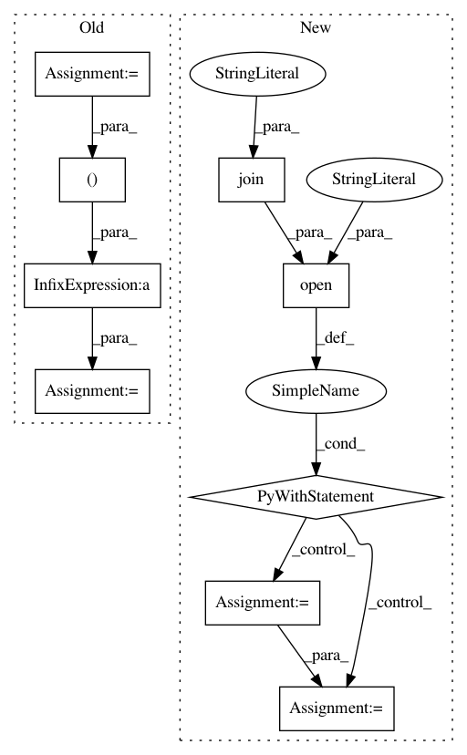

385d547abb17e1cefa01d857dd4021ca99188f30,examples/custom_dataset/predict_custom_dataset.py,,main,#,77
Before Change
// Scale the label values, if necessary.
if args.scale == "standardize":
ss = StandardScaler()
labels = ss.fit_transform(dataset.get_datasets()[-1])
dataset = NumpyTupleDataset(*(dataset.get_datasets()[:-1] + (labels,)))
else:
ss = None
test = dataset
After Change
// Load the standard scaler parameters, if necessary.
if args.scale == "standardize":
with open(os.path.join(args.in_dir, "scaler.pkl"), mode="rb") as f:
scaler = pickle.load(f)
else:
scaler = None
test = dataset
In pattern: SUPERPATTERN
Frequency: 3
Non-data size: 9
Instances
Project Name: pfnet-research/chainer-chemistry
Commit Name: 385d547abb17e1cefa01d857dd4021ca99188f30
Time: 2018-08-03
Author: mihaimorariu@gmail.com
File Name: examples/custom_dataset/predict_custom_dataset.py
Class Name:
Method Name: main
Project Name: automl/auto-sklearn
Commit Name: 145105e5dd84ca537b3eb5893fbe309edc497655
Time: 2019-02-21
Author: ahn1340@hotmail.com
File Name: scripts/2015_nips_paper/run_with_metalearning.py
Class Name:
Method Name: main
Project Name: automl/auto-sklearn
Commit Name: b8b9b6d34d35671fb8651f40503d51fc72477128
Time: 2019-03-13
Author: ahn1340@hotmail.com
File Name: scripts/2015_nips_paper/run_with_metalearning.py
Class Name:
Method Name: main